Каталог
Як обрати
Цифровий монокуляр — від 15 тис. грн (≈ 300 €); аналоговий Gen 2+ — від 75 тис. грн (≈ 1 500 €); бінокуляр і панорамний ПНВ — для тих, кому потрібне максимальне поле зору.
Монокуляр легший і залишає одне око адаптованим до темряви. Бінокуляр дає відчуття глибини, що важливо при русі й керуванні човном.
Кисневий ребризер працює тільки на малих глибинах і вимагає спеціальної підготовки. Продаємо лише за наявності сертифіката.
Промивайте спорядження прісною водою, сушіть у тіні, ПНВ зберігайте із закритою кришкою.
ПНВ і підводне спорядження

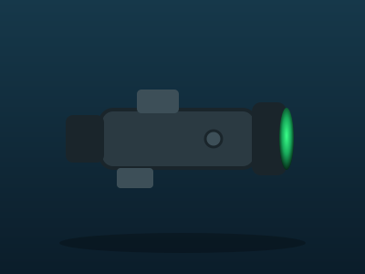
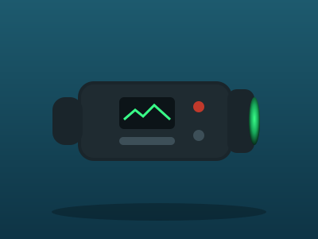
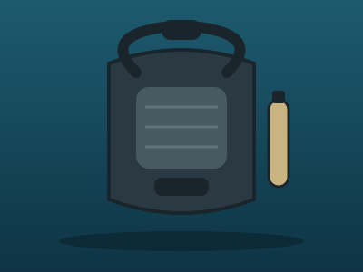
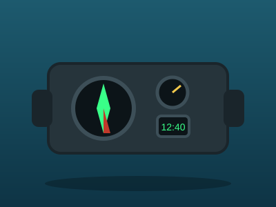
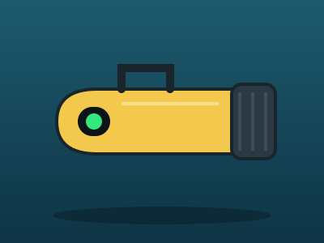
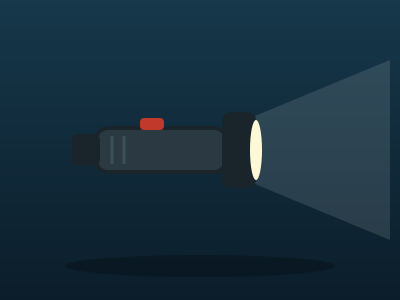
Моделі ПНБ: від PVS-14 до GPNVG-18
Довідковий каталог 15 реальних приладів нічного бачення. Фільтри працюють разом: наприклад, «Панорамний» + «Авіаційні» залишить AN/AVS-10. Для 14 моделей показано фото, для Thales Bi-NYX поки що схема оптичного типу. Натисніть на картку, щоб відкрити сторінку моделі з описом і характеристиками. Продаж і вивезення військових ПНБ регулюються експортним законодавством (у США — ITAR), тому ціни лише за запитом.
За цим поєднанням фільтрів моделей немає. Оберіть іншу схему або «Усі».
-
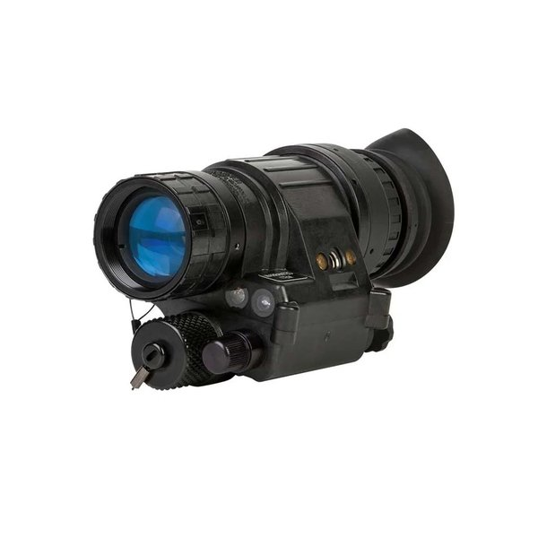
Фото моделіL3Harris, Elbit America · США
AN/PVS-14 Монокуляр Gen III
1 трубка 18 мм · поле зору 40°
Класичний армійський «ПВС»: один об'єктив і один окуляр перед одним оком. Носять на шоломі, в руці або за прицілом.
Ціна за запитом -
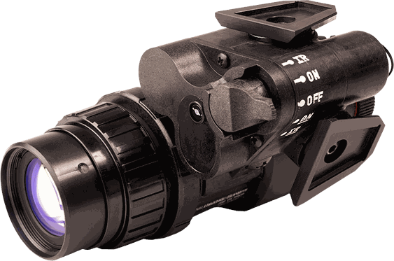
Фото моделіL3 (EOTech) · США
AN/PVS-18 M983
1 трубка 18 мм · герметичний корпус
Компактний монокуляр, який в італійському військовому каталозі вказано під двома позначеннями — AN/PVS-18 і M983. Швидко переставляється на ліве чи праве око.
Ціна за запитом -
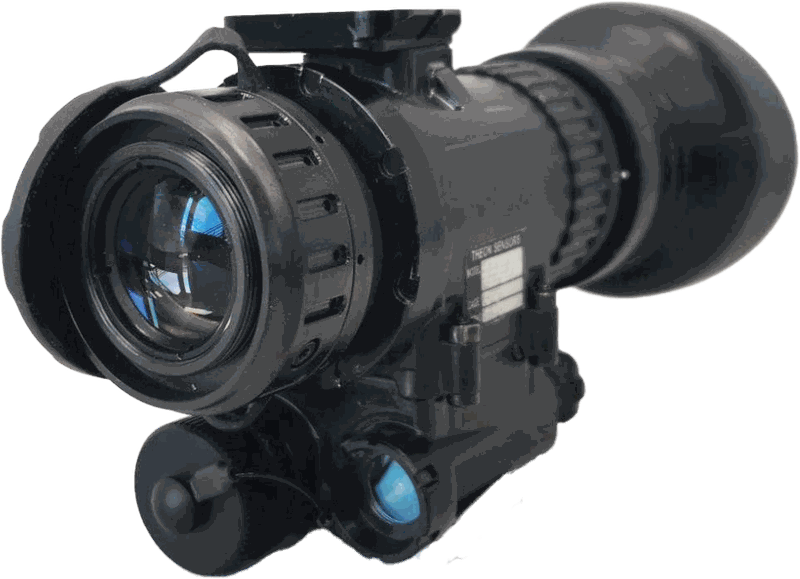
Фото моделіTHEON · Греція
THEON ARGUS 16 Сімейство ARGUS
1 трубка 16 мм · менший і легший за 18-мм прилади
Європейський багатоцільовий монокуляр: у руці, на шоломі або на зброї. Число 16 — діаметр підсилювача зображення в міліметрах.
Ціна за запитом -
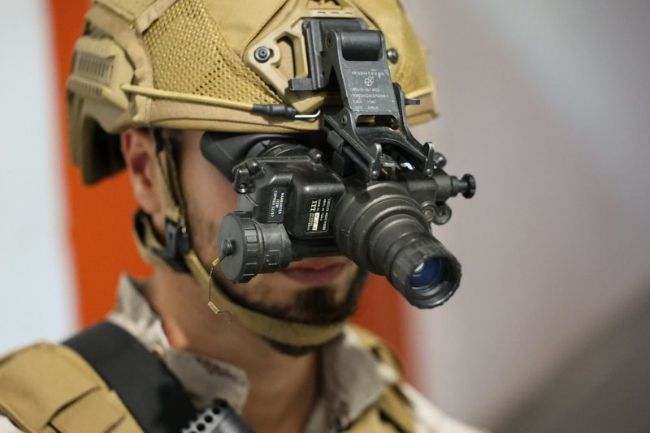
Фото моделіL3Harris, Elbit America · США
AN/PVS-7B/D Біокулярні окуляри
1 трубка · 2 окуляри · вбудований ІЧ-підсвічувач
Один центральний об'єктив і одна трубка, а призми розводять зображення на два окуляри. Обидва ока бачать ту саму картинку, тому справжнього об'ємного зору немає.
Ціна за запитом -
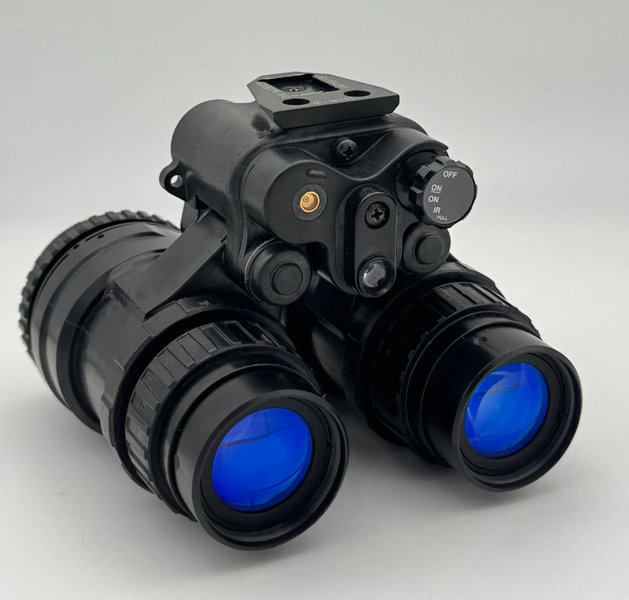
Фото моделіL3Harris · США
AN/PVS-15 M953
2 трубки · поле зору 40° · водонепроникний
Класичний двотрубний ПНБ: спереду два окремі об'єктиви, по одному на кожне око, тож відстань оцінюється значно краще. M953 — заводське позначення L3.
Ціна за запитом -
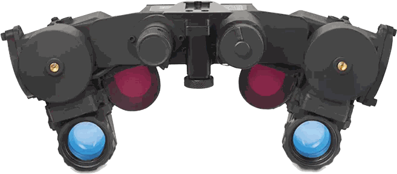
Фото моделіSteiner · США
Steiner AN/PVS-21 Low Profile NVG
2 трубки поза лінією зору · виступає на 7–10 см менше
Пласка конструкція: дзеркала й призми виносять трубки вбік, а око дивиться крізь прозорий світлороздільник, тому периферійний зір зберігається. Знято з виробництва.
Ціна за запитом -
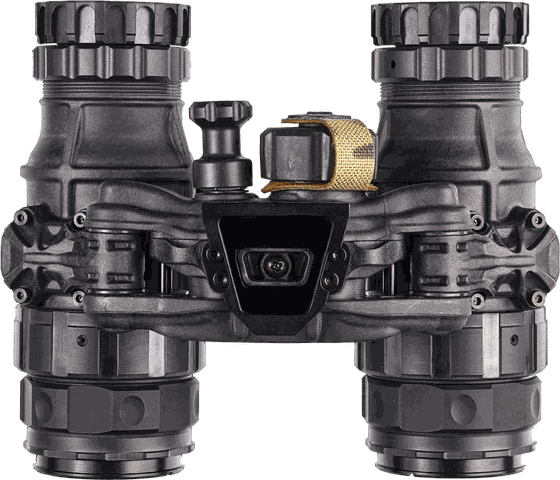
Фото моделіACTinBlack · Люксембург
ACTinBlack DTNVS Dual Tube Night Vision System
2 трубки · модулі відкидаються й вимикаються окремо
Два циліндричні модулі на центральній перемичці. Кожен відкидається окремо, тож прилад можна використовувати як монокуляр поруч із тепловізійним прицілом.
Ціна за запитом -
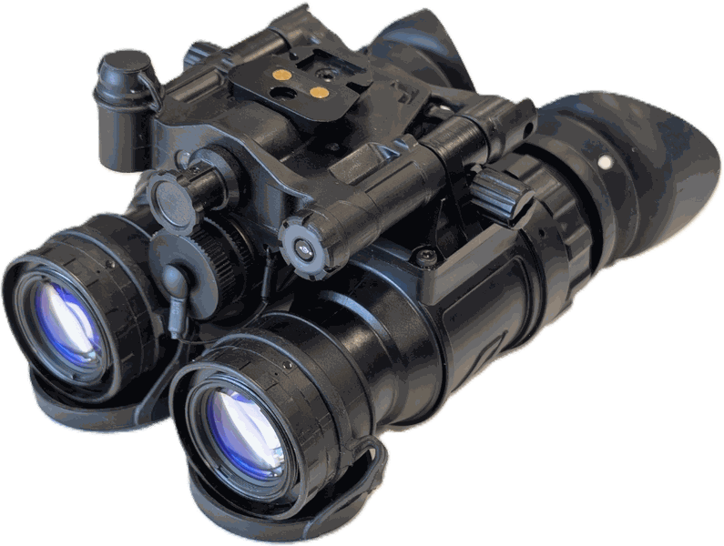
Фото моделіTHEON · Греція
THEON NYX Двотрубний ПНБ, 2013
2 трубки 16 або 18 мм · модулі відкидаються окремо
Грецька модель: у складеному положенні модулі розходяться в боки вздовж контуру шолома. На озброєнні армій Німеччини, Австрії, Австралії та інших країн.
Не плутати з Thales Bi-NYX: інший виробник, інша країна; спільне лише слово NYX у назві.
Ціна за запитом -
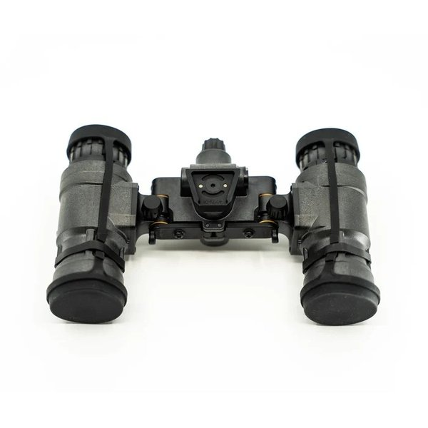
Фото моделіL3Harris · США
L3Harris AN/PVS-31A BNVD
2 трубки · поле зору 40° · ≈ 450 г
Легкий низькопрофільний бінокуляр із двома поворотними модулями. USSOCOM прийняв його на заміну AN/PVS-15.
Не плутати з Elbit America AN/PVS-31D: той самий тип, але інший виробник (Elbit) і власний корпус.
Ціна за запитом -
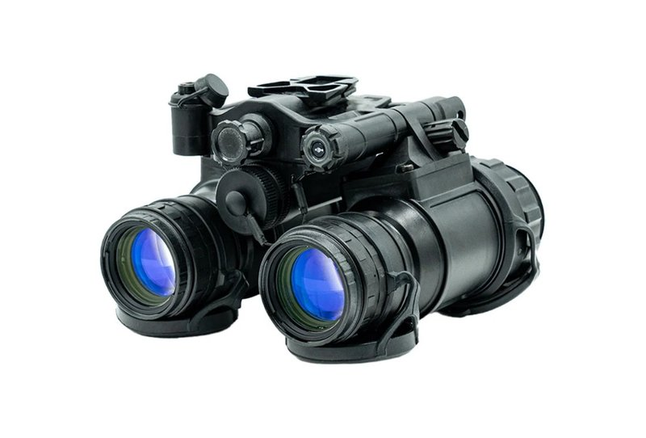
Фото моделіElbit Systems of America · США
Elbit America AN/PVS-31D F5032 · SBNVG
2 трубки · ≈ 500 г · специфікація USMC SBNVG
Окрема модель Elbit для Корпусу морської піхоти США. Корпус розроблено на основі THEON NYX. F5032 — заводська назва, зручна для пошуку фото.
Не плутати з L3Harris AN/PVS-31A: інший виробник і корпус, хоч номер схожий.
Ціна за запитом -
Схема типу, не фото моделі
Thales · Франція
Thales Bi-NYX Стереоскопічні окуляри
2 трубки Photonis · поле зору 47° · < 460 г
Французька модель на базі Thales NightRise: два об'єктиви, два окуляри, ширше поле зору за типові 40°. Перші партії французька армія отримала у 2024 році.
Не плутати з THEON NYX: грецький прилад іншого виробника.
Ціна за запитом -
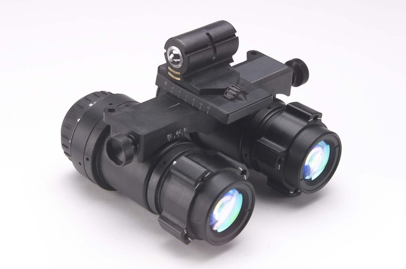
Фото моделіElbit Systems of America · США
Elbit AN/AVS-9 F4949
2 трубки · відступ окуляра 25 мм · компактний батарейний блок
Двотрубні окуляри для льотних екіпажів, стандарт для ВПС і ВМС США та понад 60 країн. Великий відступ окуляра дозволяє літати в звичайних окулярах.
Ціна за запитом -
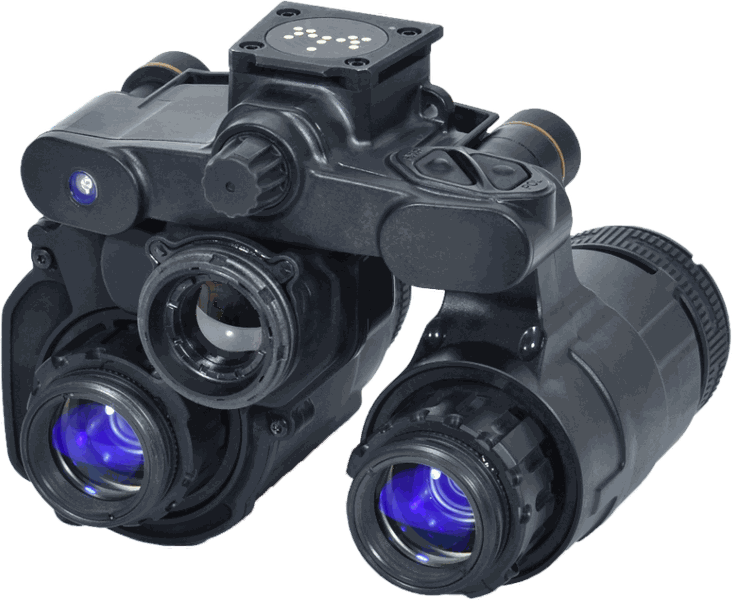
Фото моделіL3Harris · США
ENVG-B AN/PSQ-42
2 трубки + неохолоджуваний тепловізор · режим злиття
Поєднує зображення двох трубок нічного бачення та окремого тепловізійного сенсора. Працює в дим, туман і пил; армія США видала понад 10 000 комплектів.
Ціна за запитом -
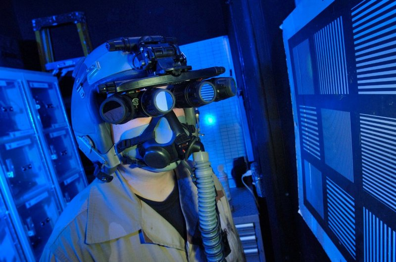
Фото моделіL3 · США
AN/AVS-10 PNVG Panoramic NVG
4 трубки · поле зору 97° × 40°
Авіаційна панорамна система з чотирма трубками — більш ніж удвічі ширший огляд за звичайні 40°. Її конструкцію L3Harris узяв за основу наземного GPNVG.
Не плутати з L3Harris GPNVG-18: наземна версія з тим самим полем зору 97°.
Ціна за запитом -
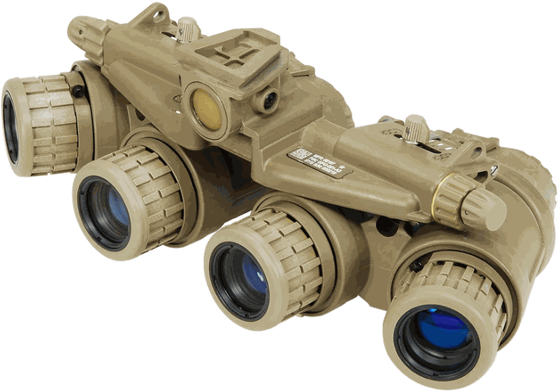
Фото моделіL3Harris · США
L3Harris GPNVG-18 GPNVG
4 трубки 18 мм · поле зору 97° × 40° · < 800 г
Той самий «чотириокий»: чотири об'єктиви, крайні розвернуті в боки. Кожен модуль можна зняти й живити окремо — вийде ручний монокуляр.
Не плутати з AN/AVS-10 PNVG: авіаційний попередник.
Ціна за запитом
Показано моделей:
Схожі моделі з фото
Моделі відомих брендів, схожі на речі з фотожурналу (за кроєм, формою чи кольором). «Ймовірно» — збіг за принтом, «Схожа модель» — аналог. Ціни орієнтовні, за даними магазинів ЄС і США станом на листопад 2026. Ціни в євро перераховано за офіційним курсом НБУ на 17.11.2026: 1 € = 49,99 грн.
Польовий одяг і аксесуари
 Фото моделі
Фото моделі
Ймовірно H&M Space International
H&M
Худі Space International
Колір: Чорний, білий принт
Розміри: Лише вживані, різні розміри
Нових у продажу немає, трапляються лише вживані оголошення — ціну не встановлено.
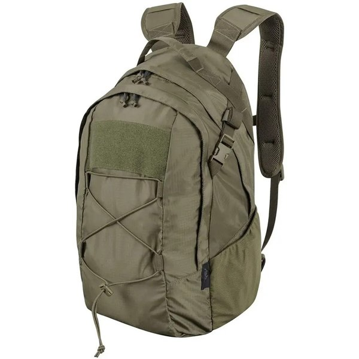
Фото моделі
Схожа модель
Helikon-Tex
EDC Lite Backpack 21 л
Колір: Олива, чорний, койот
Розміри: 21 л
Рекомендована ціна в ЄС ≈ 60 €.
 Фото моделі
Фото моделі
Схожа модель
Helikon-Tex
Boonie Mk2 Hat, NyCo Ripstop
Колір: Олива, MultiCam та ін.
Розміри: S–XL
У магазинах ЄС ≈ 16–23 €.
 Фото моделі
Фото моделі
Схожа модель
Petzl
TIKKA
Колір: Чорний
Розміри: Один розмір
У магазинах ЄС ≈ 27–37 €.
 Фото моделі
Фото моделі
Схожа модель
3M PELTOR
ComTac VIII
Колір: Олива, койот
Розміри: Один розмір
Версія Hearing Defender ≈ 650 €, з комунікацією ≈ 900 €.
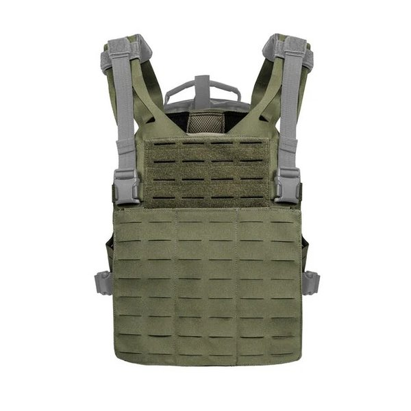
Фото моделі
Схожа модель
Tasmanian Tiger
TT Plate Carrier LC
Колір: Олива, чорний, койот
Розміри: Під пластини 30×25 см
У ЄС ≈ 210 €, без бронепластин.
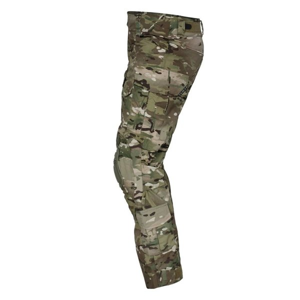
Фото моделі
Схожа модель
Crye Precision
G3 Combat Pant
Колір: MultiCam
Розміри: Талія 28–42, різна довжина
У США ≈ $317–370; наколінники продаються окремо.
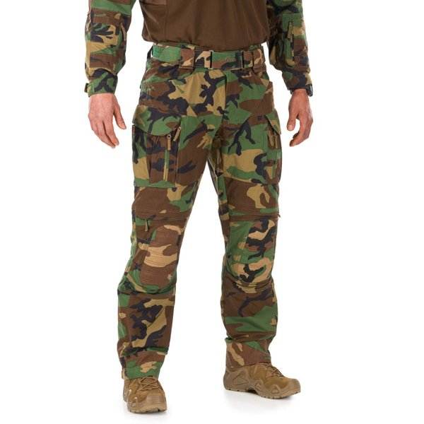
Фото моделі
Схожа модель
UF PRO
Striker X Gen.2, M81 Woodland
Колір: Woodland
Розміри: 30–40
У ЄС ≈ 339 €.
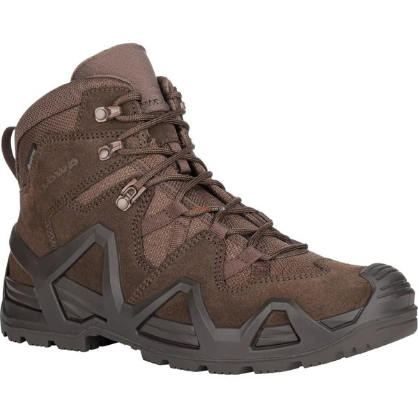
Фото моделі
Схожа модель
LOWA
Zephyr MK2 GTX Mid
Колір: Темно-коричневий, койот
Розміри: UK 3–15
Рекомендована ціна в ЄС ≈ 199–200 €.
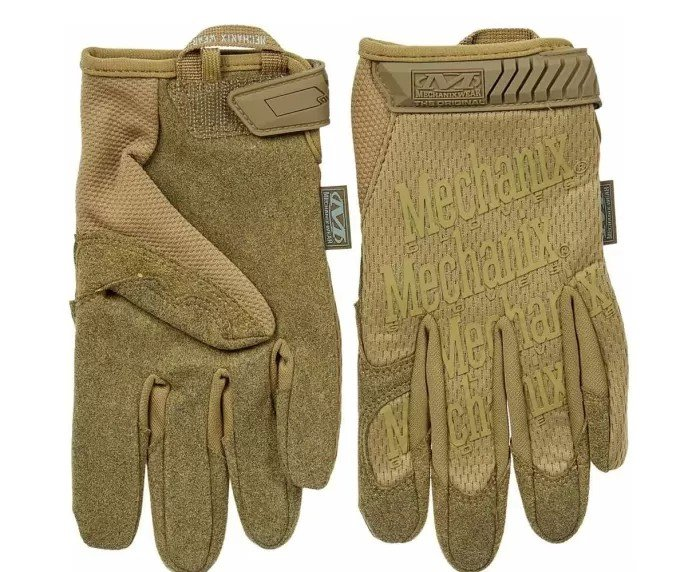
Фото моделі
Схожа модель
Mechanix Wear
The Original, Coyote
Колір: Койот
Розміри: S–XXL
Рекомендована ціна в ЄС ≈ 30 €.
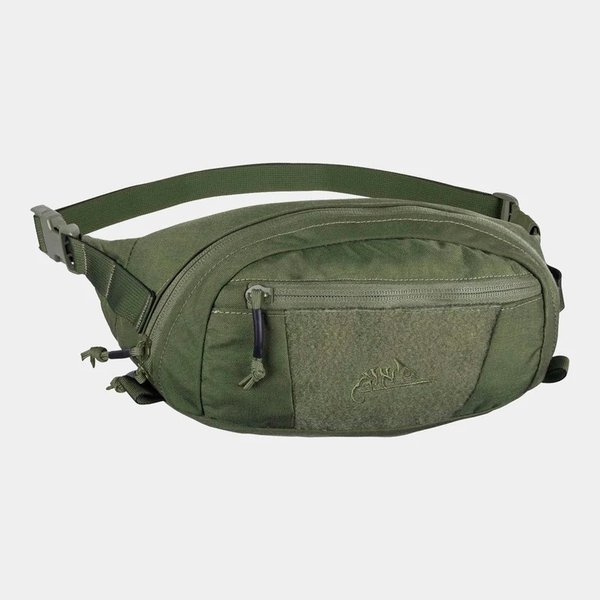
Фото моделі
Схожа модель
Helikon-Tex
Bandicoot Waist Pack
Колір: Олива, чорний, койот
Розміри: 2,7 л
Рекомендована ціна в ЄС ≈ 35–40 €.
Дайвінг
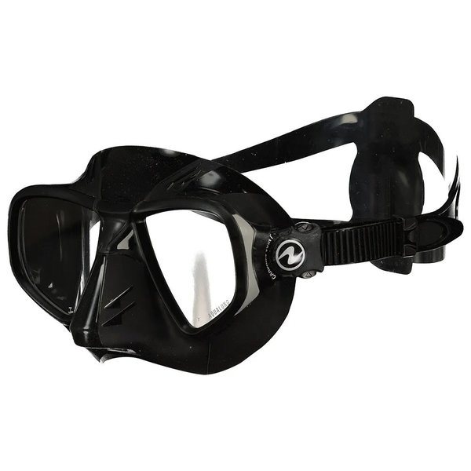
Фото моделі
Схожа модель
Aqua Lung
Micromask X
Колір: Чорний
Розміри: Один розмір
У ЄС ≈ 64–65 €.
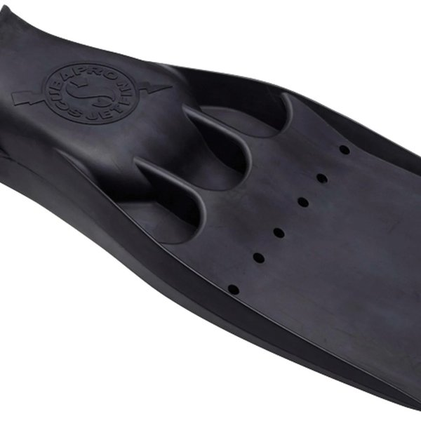
Фото моделі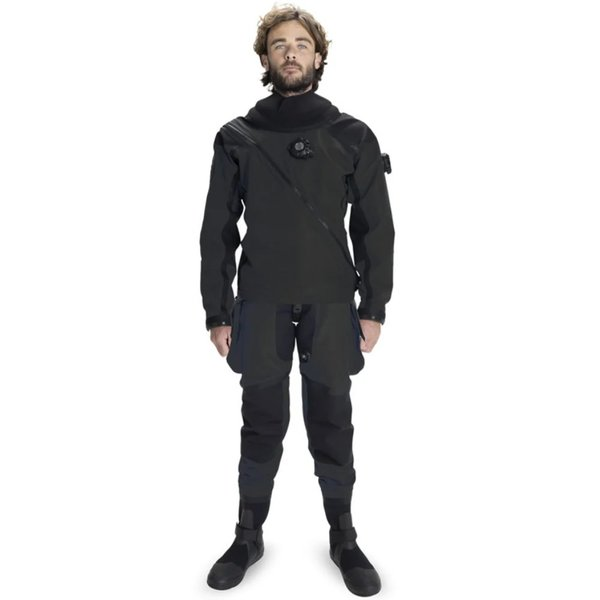
Фото моделі
Схожа модель
Fourth Element
Argonaut 3.0, сухий гідрокостюм
Колір: Чорний
Розміри: Шиється під мірки (BIOMAP)
У США від $3 650; ціна залежить від комплектації.
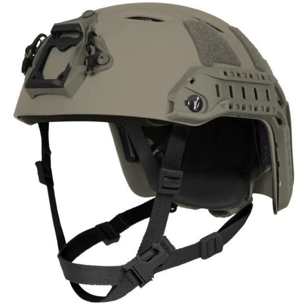
Фото моделі
Схожа модель
Ops-Core
FAST Bump High Cut
Колір: Ranger Green, чорний, tan
Розміри: M, L, XL
У ЄС ≈ 610 €; небалістичний шолом.
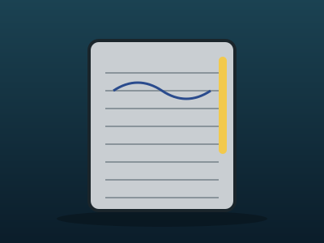
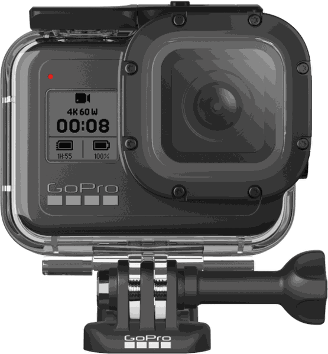
Фото моделі
Схожа модель
GoPro
HERO8 Black Protective Housing
Колір: Прозорий
Розміри: Лише для GoPro HERO8 Black
У ЄС ≈ 46 €.
Морська колекція
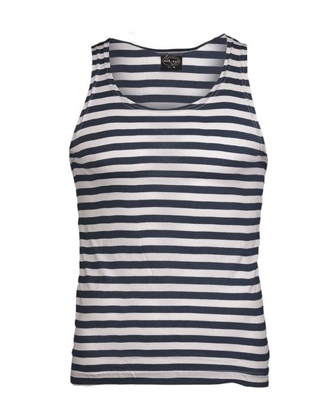
Фото моделі
Схожа модель
Mil-Tec
Blue/White Striped Sailor Tank Top
Колір: Синьо-білий
Розміри: S–XXL
Орієнтовно ≈ 8–13 € (як інші майки Mil-Tec у ЄС).
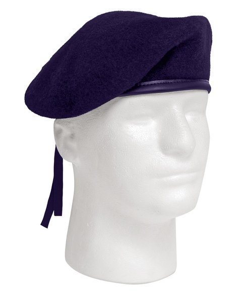
Фото моделі
Схожа модель
Rothco
G.I. Style Beret, Navy Blue
Колір: Темно-синій
Розміри: 6 1/2 – 7 3/4
У США від $19,99.
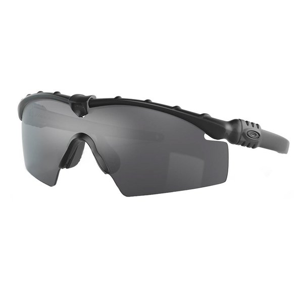
Фото моделі
Схожа модель
Oakley SI
Ballistic M Frame 3.0, сіра лінза
Колір: Чорна оправа, сіра лінза
Розміри: Один розмір
У США ≈ $175.
Одяг і аксесуари DEEP OPS
Ціни в євро перераховано за офіційним курсом НБУ на 17.11.2026: 1 € = 49,99 грн.
Польовий одяг і аксесуари
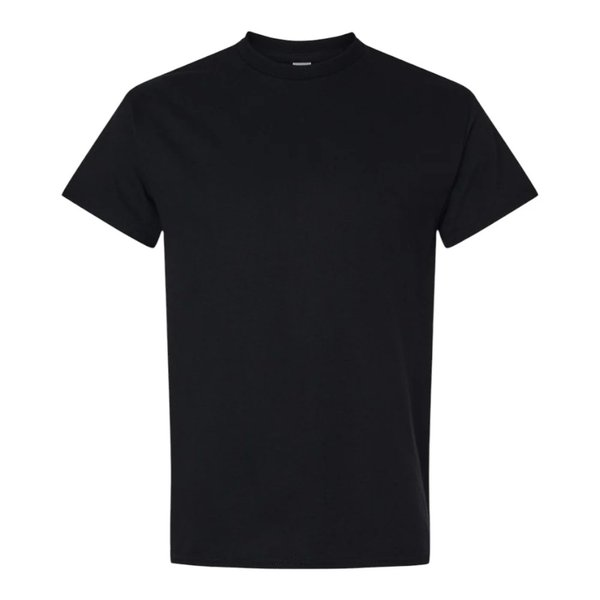
Фото схожої моделі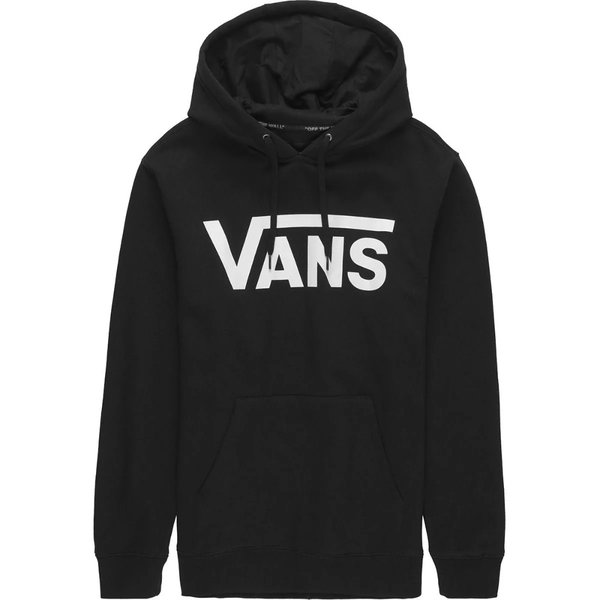
Фото схожої моделі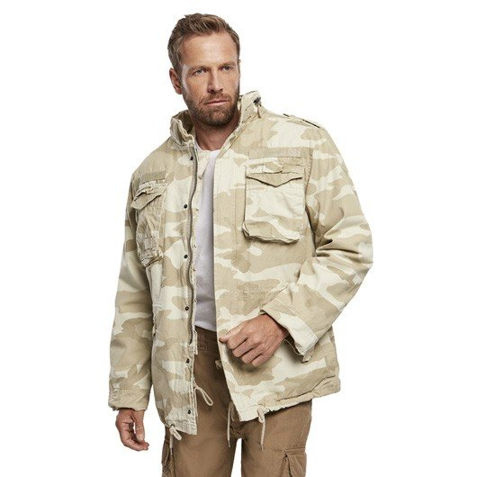
Фото схожої моделі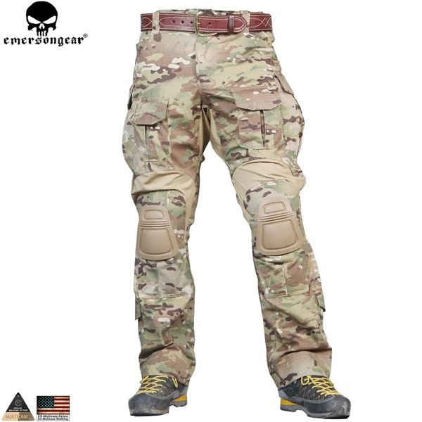
Фото схожої моделі Фото схожої моделі
Фото схожої моделі
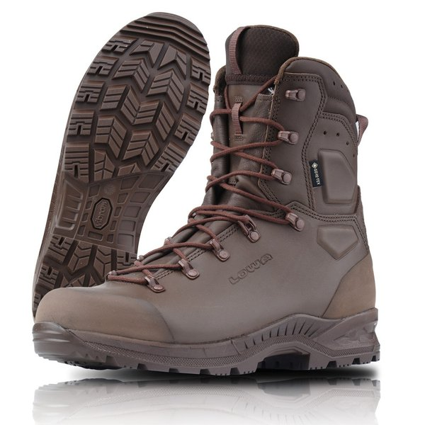
Фото схожої моделі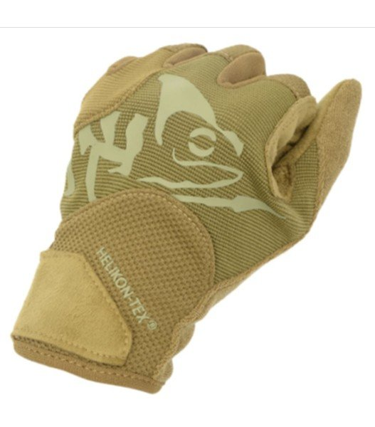
Фото схожої моделі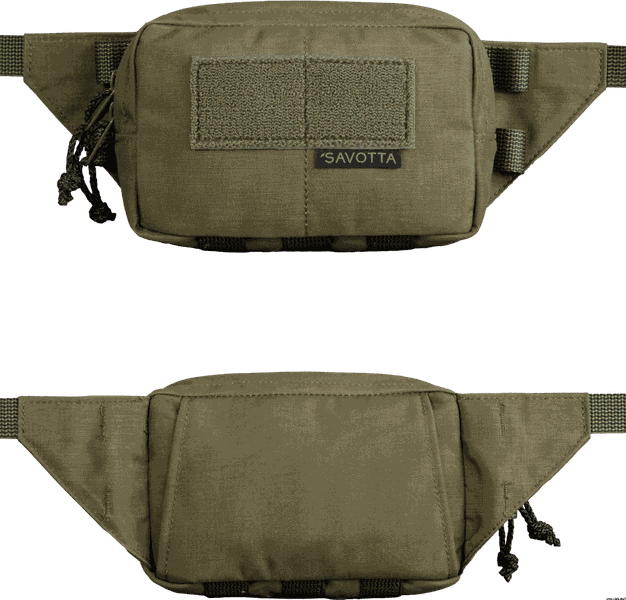
Фото схожої моделі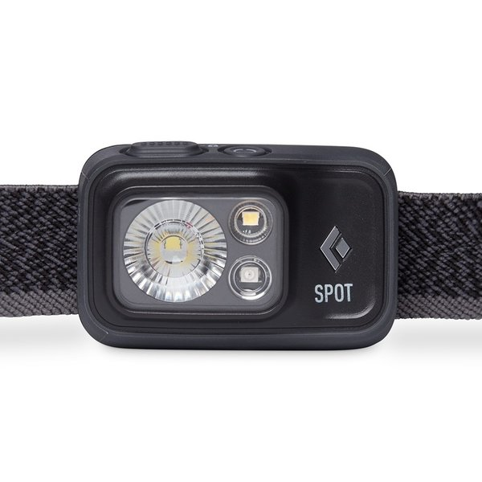
Фото схожої моделі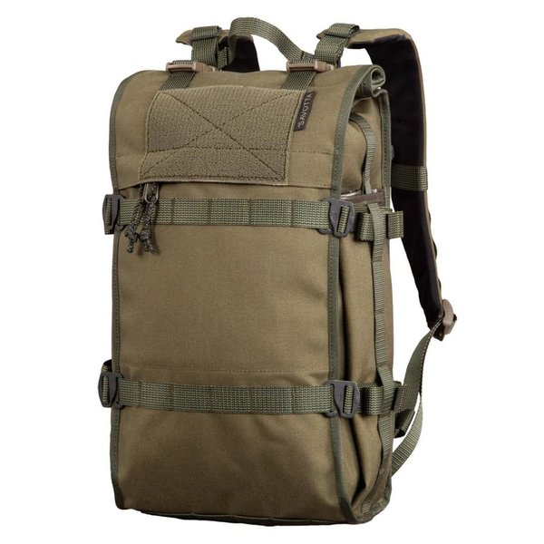
Фото схожої моделі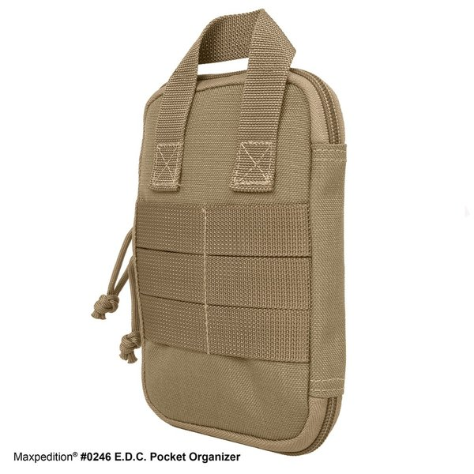
Фото схожої моделі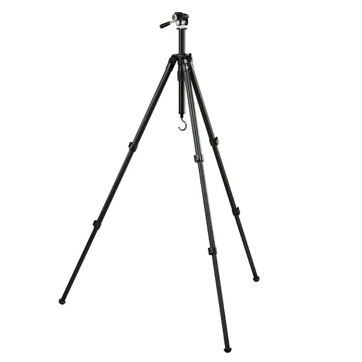
Фото схожої моделі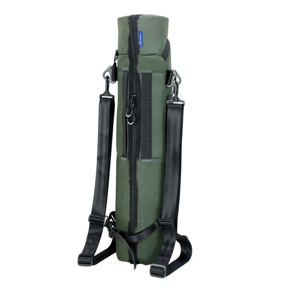
Фото схожої моделіДайвінг

 Фото схожої моделі
Фото схожої моделі
 Фото схожої моделі
Фото схожої моделі
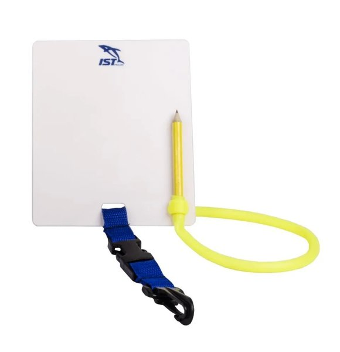
Фото схожої моделі Фото схожої моделі
Фото схожої моделі
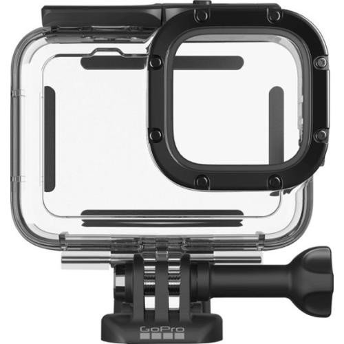
Фото схожої моделіПідводний бокс для екшн-камери
Колір: Прозорий
Розміри: Сумісність — у картці виробника камери
Бренд: DEEP OPS

Кріплення камери на шолом
Колір: Чорний
Розміри: Сумісність — у картці виробника камери
Бренд: DEEP OPS
Морська колекція
Фото схожої моделі
Фото схожої моделі
Фото схожої моделі
Фото схожої моделі
Фото схожої моделі
Захисні окуляри
Колір: Чорна оправа, димчасте скло
Розміри: Один розмір
Бренд: DEEP OPS